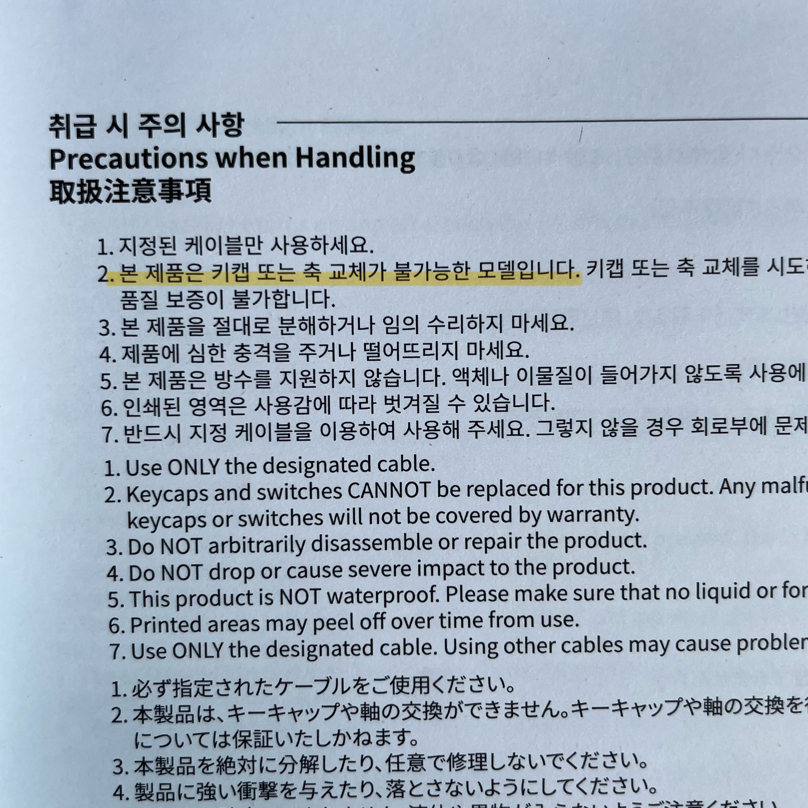

Just type and make it simple
드.디.어.
키보드를 사러 강남 신세계 백화점에 다녀왔다.
아침 6시 45분에 출발해서 7시 20분쯤 웨이팅 등록 줄을 서고, 7시 40분쯤 대기 번호를 받았다.
근처 PC방에서 게임연구하다가 백화점 오픈 시간에 돌아와서 이것저것 구경하고 11시 15분에 입장했다.
키보드도 사고, 인센스도 사고(사실 인센스에는 흥미가 크게 없었으나, 홀더가 너무 너무 너무 CUTE),
큼직한 우산도 하나 샀다(이건 정말 예정에 없던 소비였으나, 우산은 항상 필요하니까^^).
그러니까… 결제를 하려니까… “할부로.. 해주세요..”를 외칠 수 밖에 없었다.
조금 백수같아 보이긴 해도, 나름 신용카드 쓰는 사람이다.
무거운 짐들을 이끌고 다시 집에 돌아와서 신나게 언박싱을 하고, 설레는 마음으로 후기를 적으러 달려왔다.
사실 키보드 구매에 망설임이 없었던 가장 큰 이유는 디자인이었고, 두 번째 이유는 ..
때로는 모든 행동에 꼭 이유가 있어야만 하는건 아니라고 생각한다.
아무튼^^
이번에 구매한 키보드는 너무 들고 다니면서 자랑하고 싶은 디자인이지만,
소음이 다소 있는 편이라 연구실과 같은 공동 생활 공간에서는 조금 사용하기 어려울 것 같은 아쉬움이 있었다.
결론적으로,
키보드를 좋아하는 사람으로서 조금의 윤활 처리를 해주고 싶어지는 마음이 들기 시작했다.
키보드 윤활 과정은 워낙 번거로움을 많이 수반하는 작업이라, 주로 구매할때 공장 윤활 제품을 선택하거나, 순정 상태를 선호하는 편이다.
그런데 이번 키보드는 스위치 윤활과 흡음재 추가 작업만 조금 해주면 정말정말 최고의 키보드가 되어 줄 것 같았다.
우선은 제품 사용 설명서를….
어…???

어…어라…? 키캡과 축 교체가 불가능한 모델이라고 한다.
이건 정말 예상에 없던 전개인데…
기판을 보니 솔더링 기판이다. 괜찮다. 아직 한 발 남았다.
핫스왑(축 교체)이 안 되는 키보드도 조금 복잡하긴 하지만, 윤활을 할 수 있다.
우선, 인두기와 납 흡입기를 준비한다.
디솔기까지 진지하게 알아보기 시작했다.
인두기와 뽁뽁이의 기능을 모두 가진 제품을 알리에서 구하면 싸게 구할 수 있다.
“오케이 다음”
스위치의 스프링을 교체하고 전체적으로 ‘윤활’ 과정을 진행한다.
흡음재를 넣고 핫스왑 소켓을 다시 솔더링 해주고,, 스위치를 체결해주면 된다는데..
잠시만 솔더링을 다시하려면 납과 밀맥스(핫스왑 소켓)까지 사야하는 건가..?
그럴 수 있다. 이렇게 해서라도 쫀득하고 조용한 키감을 얻을 수 있다면 기꺼이 하겠다.
“오케이 다음”
혹시 모르니까 디솔더링 후기를 조금 찾아본다.


그만 알아보도록 하자.
키보드 윤활하려고 디솔더링 했다가 값비싼 키보드의 기판을 날려먹고 싶지 않다면, 당장 그만 알아보도록 하자.
납땜 기판만의 매력도 인정해주어야 한다고 생각한다.
물론 나는 앞으로 핫스왑 되는 것만 살거지만,, ^^ㅣ익
Enjoy Reading This Article?
Here are some more articles you might like to read next: